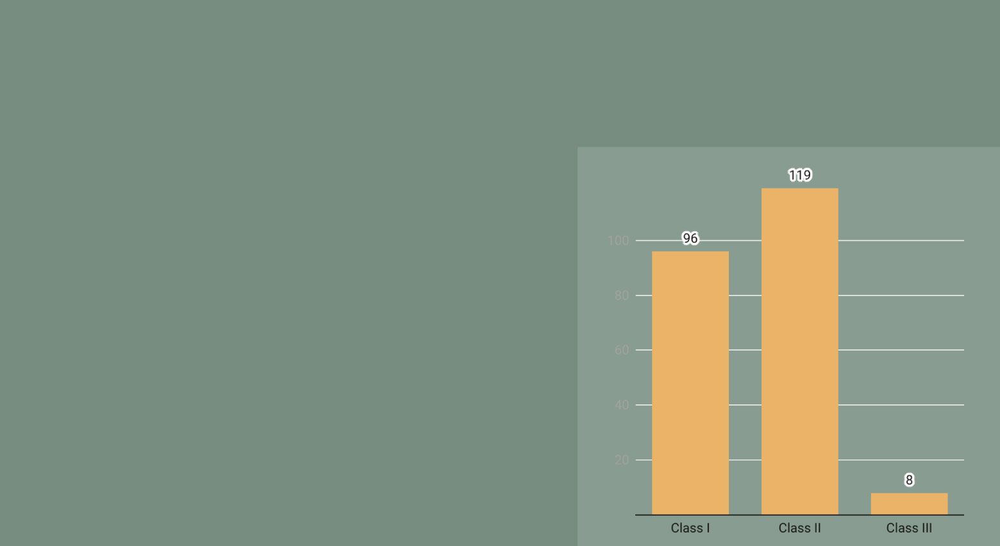
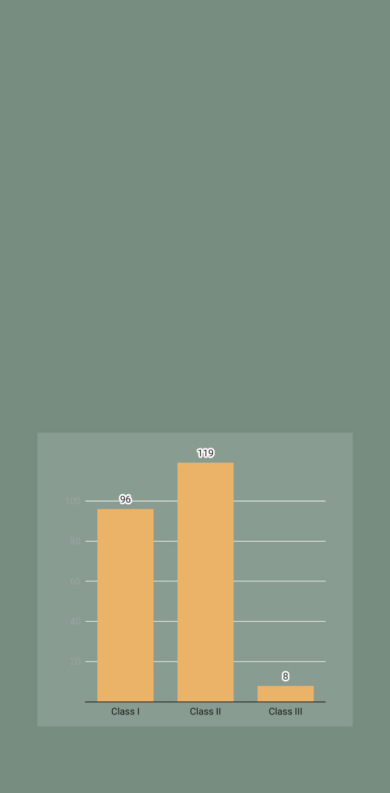

Multiple food recalls have been released from the U.S. Food and Drug Administration (FDA) and United States Department of Agriculture (USDA) Food Safety and Inspection Services for a variety of products.
Food recalls happen when a government entity or a company themselves releases information that a product could potentially be harmful or mislabeled. This will then be followed by these recalls being taken off of the market because of their violation with regulations. According to the FDA, a food item can be recalled if:
- It was contaminated with disease causing microorganisms (like bacteria, viruses or parasites)
- Contaminated with foreign objects (like fragments of glass, metal or plastic)
- Failure to list allergens in the food (like peanuts, gluten and shellfish)
The USDA currently has 12 active food recalls because of several reasons like allergens and contamination.
Recalls come from the FDA for all products except for meat, poultry, and processed egg products. This is managed by the USDA services.
Voluntary recalls are by the manufacturer or distributor of the items, but there are times where the FDA requests the recall that is mandatory. The mandatory recalls then get announced through a public release by the FDA. Some recalls can be managed and put back on the market, but others stay out of the market indefinitely.
For each recalled product, it has to match the exact information form the recall. A certain product being recalled does not mean that every one from that company is being recalled, but the specific one made when the contamination or mislabeling happened.
The FDA made a dashboard based on their enforcement reports to allow people to see the amount of recalls per year and their description of the recall. This database was made in June of 2012. This includes food recalls for each year. These products are also classified with level one through three on the potential harm it could cause.

Number of Products Per Classification for Fiscal Year 2025
This data shows the amount of products recalled by the FDA for the fiscal year of 2025, which starts on Oct 1. All of these food or cosmetic products recalled are from the FDA and excludes was is covered by the USDA. This is per product, as recalls can include multiple.
This classification is for the most severe type of recall through the FDA as there is potential for serious injury or, in some cases, death
This classification is the second highest, with a lower chance for injury or death, but there is still a possibility in severe cases.
This classification are not likely to result in serious injury or death, but it still could be dangerous enough for a recall.
Information for the definitions and chart from the FDA Food Recalls at FDA.gov for 2025
Bar graph created in DataWrapper

Number of Products Per Classification for Fiscal Year 2025
This data shows the amount of products recalled by the FDA for the fiscal year of 2025, which starts on Oct 1. All of these food or cosmetic products recalled are from the FDA and excludes was is covered by the USDA. This is per product, as recalls can include multiple.
This classification is for the most severe type of recall through the FDA as there is potential for serious injury or, in some cases, death
This classification is the second highest, with a lower chance for injury or death, but there is still a possibility in severe cases.
This classification are not likely to result in serious injury or death, but it still could be dangerous enough for a recall.
Information for the definitions and chart from the FDA Food Recalls at FDA.gov for 2025
Bar graph created in DataWrapper
Recalled products do not just pertain to food, but other products that are in the market for consumers. Every product that could have a potential to harm a person if it was not manufactured and distributed correctly can be recalled by the FDA.
If a person thinks that they have a recalled product, like food items in their home, they can try to return it to the store as most will give a refund for recalled products. All of these products need to be discarded as it potentially could cause harm to an individual. If they have questions about what recalls there are, they can look at the FDA and USDA website for more information.